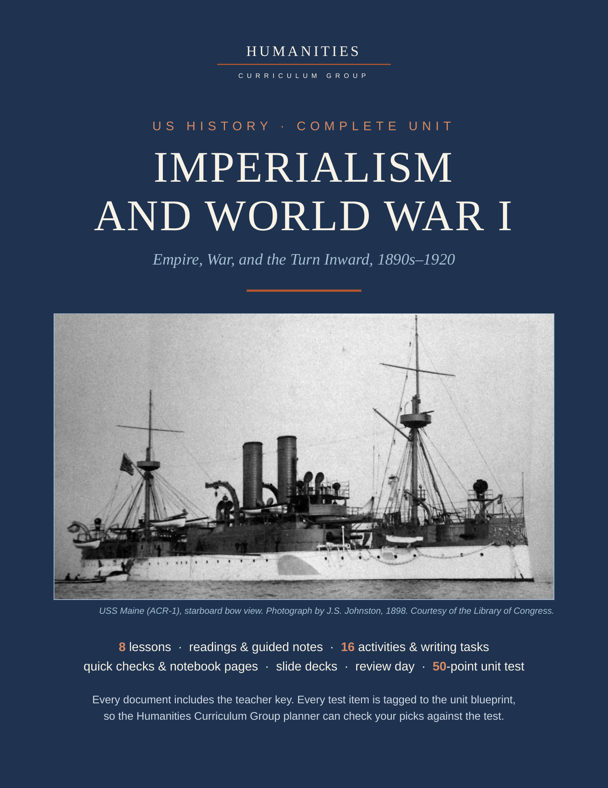

The ninth unit in the course, included with All-Access. Eight lessons, a review day, and the unit test, fifty-one documents in all, plus a slide deck with full speaker notes and a teacher notes document for every lesson. Every PDF includes the teacher key, and every document follows the same print standard as the sample unit: black text, open writing space, no ink-heavy design. If you are new here, the Progressive Era unit is the free sample, and it runs on the same plate and the same planner. Primary source work for this unit lives in the bank at The Primary Source Project, which holds audited sources for this era.
Get this unit with All-Access See the free sample unit Plan this unit
In the 1890s the United States began reaching beyond its borders for territory, markets, and influence, and within a generation it had fought two wars overseas, taken colonies in the Pacific and the Caribbean, and sent an army of millions to Europe. Expansion was debated from the start, and the debate never really settled. The war in Europe then pulled the country into a conflict it had spent three years trying to stay out of, and fighting it changed American government, work, speech, and daily life at home.
The first half of the unit traces the new overseas reach. Americans argued over sea power, markets, and ideas of national mission while Hawaii was annexed and Cuba rose against Spain. The explosion of the Maine and the yellow press turned argument into war, and the Treaty of Paris handed the United States Puerto Rico, Guam, and the Philippines. Taking the Philippines forced the hardest question of the era, whether ruling a people without its consent extended American ideals or contradicted them, and the Philippine-American War gave that question a human cost. In Asia and Latin America the country then learned to project power without formal colonies, through the Open Door notes in China, the Panama Canal, the Roosevelt Corollary, and dollar diplomacy.
The second half follows the First World War. Students build the chain from declared neutrality to intervention link by link, through the Lusitania, the Sussex Pledge, unrestricted submarine warfare, and the Zimmermann Telegram, and judge for themselves which link was decisive. The mobilization lessons trace a draftee from his registration card through the convoy crossing to the trenches at St. Mihiel and the Meuse-Argonne, with the influenza pandemic moving alongside the armies. At home the war brought production boards, Liberty Bonds, and official persuasion, and it also brought prosecutions of dissent under the Espionage and Sedition Acts, new work for women, and the Great Migration of Black southerners to northern war industry.
The unit is organized around the essential question, “Why did the United States seek power overseas, and how did the First World War change the country that fought it?” The eight lessons follow the same working pattern as the other units in the course. Each has a reading, guided notes, slides with full speaker notes, an activity, a notebook page, a quick check, and a writing task, and the activities put students to work on the era's own evidence, from motive stations to a treaty fight hearing. A review day gives students a study guide and crossword before the 50-point unit test. Every test item is tagged in the key to a published 15-entry blueprint, so students and teachers can see what the test asks and where that material was taught. The planner turns those choices into a calendar and checks the selected work against the blueprint, naming any gap while there is still time to close it. The unit closes with Wilson's peace refused at home, the strikes and Red Scare of 1919, and the election of 1920, where the turn inward sets up the Twenties.

Print it for the front of the unit packet, or keep it as the first page of the digital bundle. The cover ships with the unit in All-Access. The three previews further down show the full plate, two real pages from the lessons, and the test key's blueprint tags.
Test blueprint: the causes of American expansion in the 1890s: markets, sea power, and ideas of mission
Test blueprint: the Spanish-American War: the Maine, the fighting, and the Treaty of Paris
Test blueprint: the Philippine question: the annexation debate, the Philippine-American War, and colonial rule
Test blueprint: the Open Door in China and the Boxer Rebellion; Panama, the Roosevelt Corollary, and dollar diplomacy in Latin America
Test blueprint: the outbreak of war in Europe and American neutrality, 1914 to 1916; the road to intervention: submarine warfare, the Zimmermann Telegram, and the declaration of war
Test blueprint: mobilization: the draft, war production and finance, and the AEF; Americans in combat: convoys, the trenches, St. Mihiel, the Meuse-Argonne, and the armistice
Test blueprint: the managed home front: bonds, production boards, and official persuasion; dissent, migration, and wartime change: the Espionage and Sedition Acts, the Great Migration, and women's war work
Test blueprint: the Fourteen Points and the Treaty of Versailles; the League fight: Lodge, the reservations, and Senate rejection; the troubled aftermath: the strikes, race violence, and Red Scare of 1919; the election of 1920, normalcy, and the turn toward the Twenties
The test is 50 points: matching, multiple choice, and a source-based section built on Beveridge's "March of the Flag" speech of 1898, the Zimmermann Telegram, and Articles 231 and 232 of the Treaty of Versailles.
Three pages from the listing, built from the actual documents.
The fifteen entries the unit test assesses. Every assignment above is tagged to the entries it teaches, which is what the planner's coverage check reads.
| # | Blueprint entry | Taught in |
|---|---|---|
| 1 | The causes of American expansion in the 1890s: markets, sea power, and ideas of mission | Lesson 1 |
| 2 | The Spanish-American War: the Maine, the fighting, and the Treaty of Paris | Lesson 2 |
| 3 | The Philippine question: the annexation debate, the Philippine-American War, and colonial rule | Lesson 3 |
| 4 | The Open Door in China and the Boxer Rebellion | Lesson 4 |
| 5 | Panama, the Roosevelt Corollary, and dollar diplomacy in Latin America | Lesson 4 |
| 6 | The outbreak of war in Europe and American neutrality, 1914 to 1916 | Lesson 5 |
| 7 | The road to intervention: submarine warfare, the Zimmermann Telegram, and the declaration of war | Lesson 5 |
| 8 | Mobilization: the draft, war production and finance, and the AEF | Lesson 6 |
| 9 | Americans in combat: convoys, the trenches, St. Mihiel, the Meuse-Argonne, and the armistice | Lesson 6 |
| 10 | The managed home front: bonds, production boards, and official persuasion | Lesson 7 |
| 11 | Dissent, migration, and wartime change: the Espionage and Sedition Acts, the Great Migration, and women's war work | Lesson 7 |
| 12 | The Fourteen Points and the Treaty of Versailles | Lesson 8 |
| 13 | The League fight: Lodge, the reservations, and Senate rejection | Lesson 8 |
| 14 | The troubled aftermath: the strikes, race violence, and Red Scare of 1919 | Lesson 8 |
| 15 | The election of 1920, normalcy, and the turn toward the Twenties | Lesson 8 |